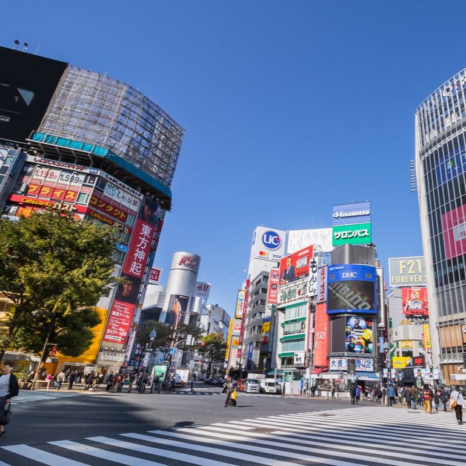
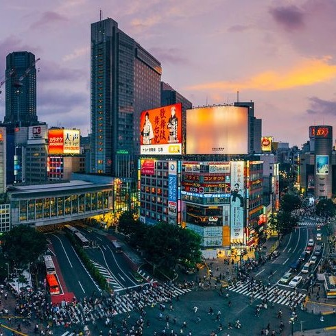
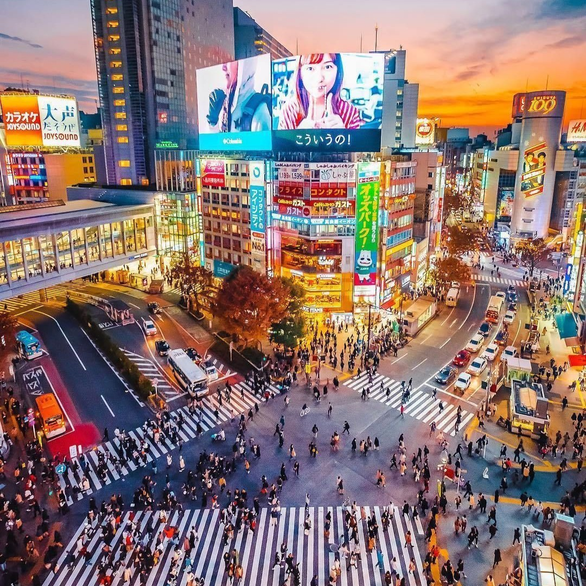

Shibuya



Shibuya – The Vibrant Heart of Modern Tokyo
Discover the lively atmosphere of Shibuya, one of Tokyo’s most iconic and energetic districts. Shibuya is famous for its bustling scramble crossing, trendy shopping centers, and cafés and restaurants that capture the youthful spirit of Japan. Whether you’re looking for a unique shopping experience, iconic city photos, or an energetic urban vibe, Shibuya is the perfect destination to explore modern Japanese culture.